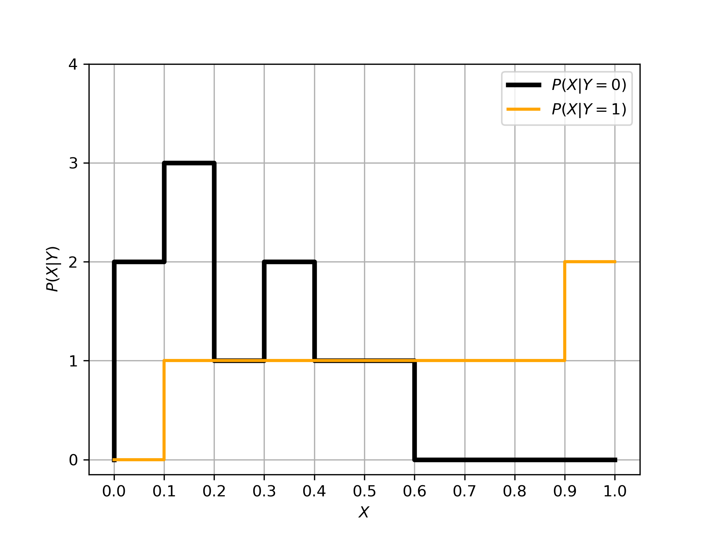

Assignment 1 - Probability, Linear Algebra, & Computational Programming
IDS:705 Principles of Machine Learning
YOUR FULL NAME HERE
Netid: Your netid here
Names of students you worked with on this assignment: LIST HERE IF APPLICABLE (delete if not)
Note: this assignment falls under collaboration Mode 2: Individual Assignment – Collaboration Permitted. Please refer to the syllabus for additional information.
Instructions for all assignments can be found here, and are also linked to from the course syllabus.
Total points in the assignment add up to 90; an additional 10 points are allocated to professionalism and presentation quality.
Learning Objectives
The purpose of this assignment is to provide a refresher on fundamental concepts that we will use throughout this course and provide an opportunity to develop skills in any of the related skills that may be unfamiliar to you. Through the course of completing this assignment, you will…
- Refresh you knowledge of probability theory including properties of random variables, probability density functions, cumulative distribution functions, and key statistics such as mean and variance.
- Revisit common linear algebra and matrix operations and concepts such as matrix multiplication, inner and outer products, inverses, the Hadamard (element-wise) product, eigenvalues and eigenvectors, orthogonality, and symmetry.
- Practice numerical programming, core to machine learning, by loading and filtering data, plotting data, vectorizing operations, profiling code speed, and debugging and optimizing performance. You will also practice computing probabilities based on simulation.
- Develop or refresh your knowledge of Git version control, which will be a core tool used in the final project of this course
- Apply your skills altogether through an exploratory data analysis to practice data cleaning, data manipulation, interpretation, and communication
We will build on these concepts throughout the course, so use this assignment as a catalyst to deepen your knowledge and seek help with anything unfamiliar.
If some references would be helpful on these topics, I would recommend the following resources: - Mathematics for Machine Learning by Deisenroth, Faisal, and Ong - Deep Learning; Part I: Applied Math and Machine Learning Basics by Goodfellow, Bengio, and Courville - The Matrix Calculus You Need For Deep Learning by Parr and Howard - Dive Into Deep Learning; Appendix: Mathematics for Deep Learning by Weness, Hu, et al.
Note: don’t worry if you don’t understand everything in the references above - some of these books dive into significant minutia of each of these topics.
Probability and Statistics Theory
Note: for all assignments, write out equations and math using markdown and LaTeX. I recommend that you complete the work on paper before typing up the final version. For this assignment show your math for questions 1-4, meaning that you should include any intermediate steps necessary to understand the logic of your solution. Most can be completed in 3-4 steps. Being proficient in expressing yourself clearly, sometimes mathematically, is a valuable skill to have as a data scientist
1
[3 points]
Let \(f(x) = \begin{cases} 0 & x < 0 \\ \alpha x^2 & 0 \leq x \leq 2 \\ 0 & 2 < x \end{cases}\)
For what value of \(\alpha\) is \(f(x)\) a valid probability density function?
ANSWER
2
[3 points] What is the cumulative distribution function (CDF) that corresponds to the following probability distribution function? Please state the value of the CDF for all possible values of \(x\).
\(f(x) = \begin{cases} \frac{1}{3} & 0 < x < 3 \\ 0 & \text{otherwise} \end{cases}\)
ANSWER
3
[6 points] For the probability distribution function for the random variable \(X\),
\(f(x) = \begin{cases} \frac{1}{3} & 0 < x < 3 \\ 0 & \text{otherwise} \end{cases}\)
what is the (a) expected value and (b) variance of \(X\). Show all work.
ANSWER
4
[6 points] You are given the training data below and asked to determine the probability that a sample of \(x=0.54\) comes from class 1, or equivalently, \(P(Y=1|X=0.54)\). The feature,, \(x\) can take on values between 0 and 1.
| \(x\) value range | Negative data in the range (\(x\),\(y=0\)) | Positive data in the range (\(x\),\(y=1\)) |
|---|---|---|
| 0.0 - 0.1 | (0.05,0),(0.07,0) | None |
| 0.1 - 0.2 | (0.11,0),(0.13,0),(0.19,0) | (0.14,1) |
| 0.2 - 0.3 | (0.23,0) | (0.24,1) |
| 0.3 - 0.4 | (0.35,0), (0.37,0) | (0.32,1) |
| 0.4 - 0.5 | (0.49,0) | (0.47,1) |
| 0.5 - 0.6 | (0.51,0) | (0.53,1) |
| 0.6 - 0.7 | None | (0.61,1) |
| 0.7 - 0.8 | None | (0.77,1) |
| 0.8 - 0.9 | None | (0.83,1) |
| 0.9 - 1.0 | None | (0.92,1),(0.98,1) |
Note: You don’t need to use these data directly, but this provides an example of how the data could be distributed to form the empirical likelihoods and priors shown below.
Recall Bayes’ Rule which computes the poster distribution, \(P(Y|X)\), based on the likelihood of the data conditioned on the class of the samples, \(P(X|Y=y)\), the prior \(P(Y)\) which is essentially the distribution of the class labels across all the data, and the evidence \(P(X)\) which is the distribution of the features, \(X\), regardless of class labels.
\[\begin{equation} P(Y|X)= \frac{P(X|Y)P(Y)}{P(X)} \end{equation}\]
Also, note that P(X) can alternatively be computed in this case as:
\[\begin{equation} P(X) = P(X|Y=0)P(Y=0) + P(X|Y=1)P(Y=1) \end{equation}\]
Below are the prior and the likelihood functions based on the dataset above:


- What is \(P(X=0.54|Y=1)P(Y=1)\)?
- What is \(P(X=0.54)\)?
- What is \(P(Y=1|X=0.54)\)?
Show each value you use for each computation.
ANSWER
Linear Algebra
5
[5 points] A common task in machine learning is a change of basis: transforming the representation of our data from one space to another. A prime example of this is through the process of dimensionality reduction as in Principle Components Analysis where we often seek to transform our data from one space (of dimension \(n\)) to a new space (of dimension \(m\)) where \(m<n\). Assume we have a sample of data of dimension \(n=4\) (as shown below) and we want to transform it into a dimension of \(m=2\).
\(\mathbf{x} = \begin{bmatrix} x_1 \\ x_2 \\ x_3 \\ x_4 \end{bmatrix}\)
What are the dimensions of a matrix, \(\mathbf{A}\), that would linearly transform our sample of data, \(\mathbf{x}\), into a space of \(m=2\) through the operation \(\mathbf{Ax}\)?
Express this transformation in terms of the components of \(\mathbf{x}\): \(x_1\), \(x_2\), \(x_3\), \(x_4\) and the matrix \(\mathbf{A}\) where each entry in the matrix is denoted as \(a_{i,j}\) (e.g. the entry in the first row and second column would be \(a_{1,2}\)). Your answer will be in the form of a matrix expressing result of the product \(\mathbf{Ax}\).
Note: please write your answers here in LaTeX
ANSWER
6
[14 points] Matrix manipulations and multiplication. Machine learning involves working with many matrices, so this exercise will provide you with the opportunity to practice those skills.
Let \(\mathbf{A} = \begin{bmatrix} 1 & 2 & 3 \\ 2 & 4 & 5 \\ 3 & 5 & 6 \end{bmatrix}\), \(\mathbf{b} = \begin{bmatrix} -1 \\ 3 \\ 8 \end{bmatrix}\), \(\mathbf{c} = \begin{bmatrix} 4 \\ -3 \\ 6 \end{bmatrix}\), and \(\mathbf{I} = \begin{bmatrix} 1 & 0 & 0 \\ 0 & 1 & 0 \\ 0 & 0 & 1 \end{bmatrix}\)
Compute the following using Python or indicate that it cannot be computed. Refer to NumPy’s tools for handling matrices. While all answers should be computer using Python, your response to whether each item can be computed should refer to underlying linear algebra. There may be circumstances when Python will produce an output, but based on the dimensions of the matrices involved, the linear algebra operation is not possible. For the case when an operation is invalid, explain why it is not.
When the quantity can be computed, please provide both the Python code AND the output of that code (this need not be in LaTex)
- \(\mathbf{A}\mathbf{A}\)
- \(\mathbf{A}\mathbf{A}^T\)
- \(\mathbf{A}\mathbf{b}\)
- \(\mathbf{A}\mathbf{b}^T\)
- \(\mathbf{b}\mathbf{A}\)
- \(\mathbf{b}^T\mathbf{A}\)
- \(\mathbf{b}\mathbf{b}\)
- \(\mathbf{b}^T\mathbf{b}\)
- \(\mathbf{b}\mathbf{b}^T\)
- \(\mathbf{b} + \mathbf{c}^T\)
- \(\mathbf{b}^T\mathbf{b}^T\)
- \(\mathbf{A}^{-1}\mathbf{b}\)
- \(\mathbf{A}\circ\mathbf{A}\)
- \(\mathbf{b}\circ\mathbf{c}\)
Note: The element-wise (or Hadamard) product is the product of each element in one matrix with the corresponding element in another matrix, and is represented by the symbol “\(\circ\)”.
ANSWER
7
[8 points] Eigenvectors and eigenvalues. Eigenvectors and eigenvalues are useful for some machine learning algorithms, but the concepts take time to solidly grasp. They are used extensively in machine learning and in this course we will encounter them in relation to Principal Components Analysis (PCA), clustering algorithms, For an intuitive review of these concepts, explore this interactive website at Setosa.io. Also, the series of linear algebra videos by Grant Sanderson of 3Brown1Blue are excellent and can be viewed on youtube here. For these questions, numpy may once again be helpful.
- Calculate the eigenvalues and corresponding eigenvectors of matrix \(\mathbf{A}\) above, from the last question.
- Choose one of the eigenvector/eigenvalue pairs, \(\mathbf{v}\) and \(\lambda\), and show that \(\mathbf{A} \mathbf{v} = \lambda \mathbf{v}\). This relationship extends to higher orders: \(\mathbf{A} \mathbf{A} \mathbf{v} = \lambda^2 \mathbf{v}\)
- Show that the eigenvectors are orthogonal to one another (e.g. their inner product is zero). This is true for eigenvectors from real, symmetric matrices. In three dimensions or less, this means that the eigenvectors are perpendicular to each other. Typically we use the orthogonal basis of our standard x, y, and z, Cartesian coordinates, which allows us, if we combine them linearly, to represent any point in a 3D space. But any three orthogonal vectors can do the same. We will see this property is used in PCA to identify the dimensions of greatest variation in our data when we discuss dimensionality reduction.
ANSWER
Numerical Programming
8
[10 points] Loading data and gathering insights from a real dataset
In data science, we often need to have a sense of the idiosyncrasies of the data, how they relate to the questions we are trying to answer, and to use that information to help us to determine what approach, such as machine learning, we may need to apply to achieve our goal. This exercise provides practice in exploring a dataset and answering question that might arise from applications related to the data.
Data. The data for this problem can be found in the data subfolder in the assignments folder on github. The filename is a1_egrid2016.xlsx. This dataset is the Environmental Protection Agency’s (EPA) Emissions & Generation Resource Integrated Database (eGRID) containing information about all power plants in the United States, the amount of generation they produce, what fuel they use, the location of the plant, and many more quantities. We’ll be using a subset of those data.
The fields we’ll be using include:
| field | description |
|---|---|
| SEQPLT16 | eGRID2016 Plant file sequence number (the index) |
| PSTATABB | Plant state abbreviation |
| PNAME | Plant name |
| LAT | Plant latitude |
| LON | Plant longitude |
| PLPRMFL | Plant primary fuel |
| CAPFAC | Plant capacity factor |
| NAMEPCAP | Plant nameplate capacity (Megawatts MW) |
| PLNGENAN | Plant annual net generation (Megawatt-hours MWh) |
| PLCO2EQA | Plant annual CO2 equivalent emissions (tons) |
For more details on the data, you can refer to the eGrid technical documents. For example, you may want to review page 45 and the section “Plant Primary Fuel (PLPRMFL)”, which gives the full names of the fuel types including WND for wind, NG for natural gas, BIT for Bituminous coal, etc.
There also are a couple of “gotchas” to watch out for with this dataset: - The headers are on the second row and you’ll want to ignore the first row (they’re more detailed descriptions of the headers). - NaN values represent blanks in the data. These will appear regularly in real-world data, so getting experience working with these sorts of missing values will be important.
Your objective. For this dataset, your goal is to answer the following questions about electricity generation in the United States:
(a) Which plant has generated the most energy (measured in MWh)?
(b) What is the name of the northern-most power plant in the United States?
(c) What is the state where the northern-most power plant in the United States is located?
(d) Plot a bar plot showing the amount of energy produced by each fuel type across all plants.
(e) From the plot in (d), which fuel for generation produces the most energy (MWh) in the United States?
ANSWER
9
[6 points] Vectorization. When we first learn to code and think about iterating over an array, we often use loops. If implemented correctly, that does the trick. In machine learning, we iterate over so much data that those loops can lead to significant slow downs if they are not computationally efficient. In Python, vectorizing code and relying on matrix operations with efficient tools like numpy is typically the faster approach. Of course, numpy relies on loops to complete the computation, but this is at a lower level of programming (typically in C), and therefore is much more efficient. This exercise will explore the benefits of vectorization. Since many machine learning techniques rely on matrix operations, it’s helpful to begin thinking about implementing algorithms using vector forms.
Begin by creating an array of 10 million random numbers using the numpy random.randn module. Compute the sum of the squares of those random numbers first in a for loop, then using Numpy’s dot module to perform an inner (dot) product. Verify that your code produces the same output in each case. Time how long it takes to compute each and report the results and report the output. How many times faster is the vectorized code than the for loop approach? (Note - your results may vary from run to run).
Your output should use the print() function as follows (where the # symbols represent your answers, to a reasonable precision of 4-5 significant figures):
Time [sec] (non-vectorized): ######
Time [sec] (vectorized): ######
The vectorized code is ##### times faster than the nonvectorized code
ANSWER
10
[10 points] This exercise will walk through some basic numerical programming and probabilistic thinking exercises, two skills which are frequently used in machine learning for answering questions from our data. 1. Synthesize \(n=10^4\) normally distributed data points with mean \(\mu=2\) and a standard deviation of \(\sigma=1\). Call these observations from a random variable \(X\), and call the vector of observations that you generate, \(\textbf{x}\). 2. Calculate the mean and standard deviation of \(\textbf{x}\) to validate (1) and provide the result to a precision of four significant figures. 3. Plot a histogram of the data in \(\textbf{x}\) with 30 bins 4. What is the 90th percentile of \(\textbf{x}\)? The 90th percentile is the value below which 90% of observations can be found. 5. What is the 99th percentile of \(\textbf{x}\)? 6. Now synthesize \(n=10^4\) normally distributed data points with mean \(\mu=0\) and a standard deviation of \(\sigma=3\). Call these observations from a random variable \(Y\), and call the vector of observations that you generate, \(\textbf{y}\). 7. Create a new figure and plot the histogram of the data in \(\textbf{y}\) on the same axes with the histogram of \(\textbf{x}\), so that both histograms can be seen and compared. 8. Using the observations from \(\textbf{x}\) and \(\textbf{y}\), estimate \(E[XY]\)
ANSWER
Version Control via Git
11
[4 points] Git is efficient for collaboration, and expectation in industry, and one of the best ways to share results in academia. You can even use some Git repositories (e.g. Github) as hosts for website, such as with the course website. As a data scientist with experience in machine learning, Git is expected. We will interact with Git repositories (a.k.a. repos) throughout this course, and your project will require the use of git repos for collaboration.
Complete the Atlassian Git tutorial, specifically the following listed sections. Try each concept that’s presented. For this tutorial, instead of using BitBucket as your remote repository host, you may use your preferred platform such as Github or Duke’s Gitlab. 1. What is version control 2. What is Git 3. Install Git 4. Setting up a repository 5. Saving changes 6. Inspecting a repository 7. Undoing changes 8. Rewriting history 9. Syncing 10. Making a pull request 11. Using branches 12. Comparing workflows
I also have created two videos on the topic to help you understand some of these concepts: Git basics and a step-by-step tutorial.
As an additional resource, Microsoft now offers a git tutorial on this topic as well.
For your answer, affirm that you either completed the tutorials above OR have previous experience with ALL of the concepts above. Confirm this by typing your name below and selecting the situation that applies from the two options in brackets.
ANSWER
I, [your name here], affirm that I have [completed the above tutorial / I have previous experience that covers all the content in this tutorial]
Exploratory Data Analysis
12
[15 points] Here you’ll bring together some of the individual skills that you demonstrated above and create a Jupyter notebook based blog post on your exploratory data analysis. Your goal is to identify a question or problem and to work towards solving it or providing additional information or evidence (data) related to it through your data analysis. Below, we walk through a process to follow for your analysis. Additionally, you can find an example of a well-done exploratory data analysis here from past years.
- Find a dataset that interests you and relates to a question or problem that you find intriguing.
- Describe the dataset, the source of the data, and the reason the dataset was of interest. Include a description of the features, data size, data creator and year of creation (if available), etc. What question are you hoping to answer through exploring the dataset?
- Check the data and see if they need to be cleaned: are there missing values? Are there clearly erroneous values? Do two tables need to be merged together? Clean the data so it can be visualized. If the data are clean, state how you know they are clean (what did you check?).
- Plot the data, demonstrating interesting features that you discover. Are there any relationships between variables that were surprising or patterns that emerged? Please exercise creativity and curiosity in your plots. You should have at least 4 plots exploring the data in different ways.
- What insights are you able to take away from exploring the data? Is there a reason why analyzing the dataset you chose is particularly interesting or important? Summarize this for a general audience (imagine your publishing a blog post online) - boil down your findings in a way that is accessible, but still accurate.
Here your analysis will evaluated based on: 1. Motivation: was the purpose of the choice of data clearly articulated? Why was the dataset chosen and what was the goal of the analysis? 2. Data cleaning: were any issues with the data investigated and, if found, were they resolved? 3. Quality of data exploration: were at least 4 unique plots (minimum) included and did those plots demonstrate interesting aspects of the data? Was there a clear purpose and takeaway from EACH plot? 4. Interpretation: Were the insights revealed through the analysis and their potential implications clearly explained? Was there an overall conclusion to the analysis?
ANSWER